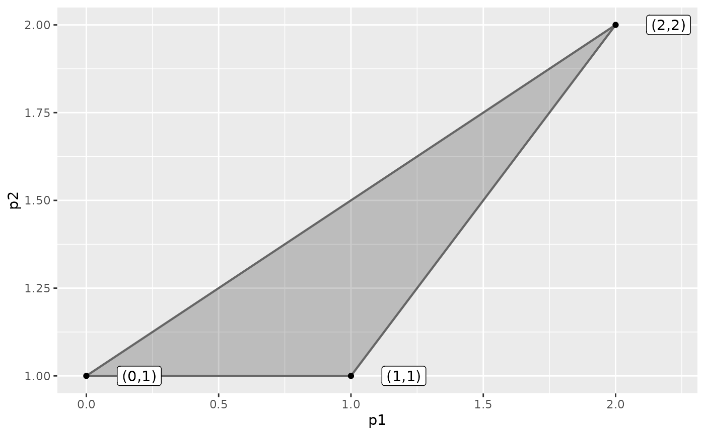
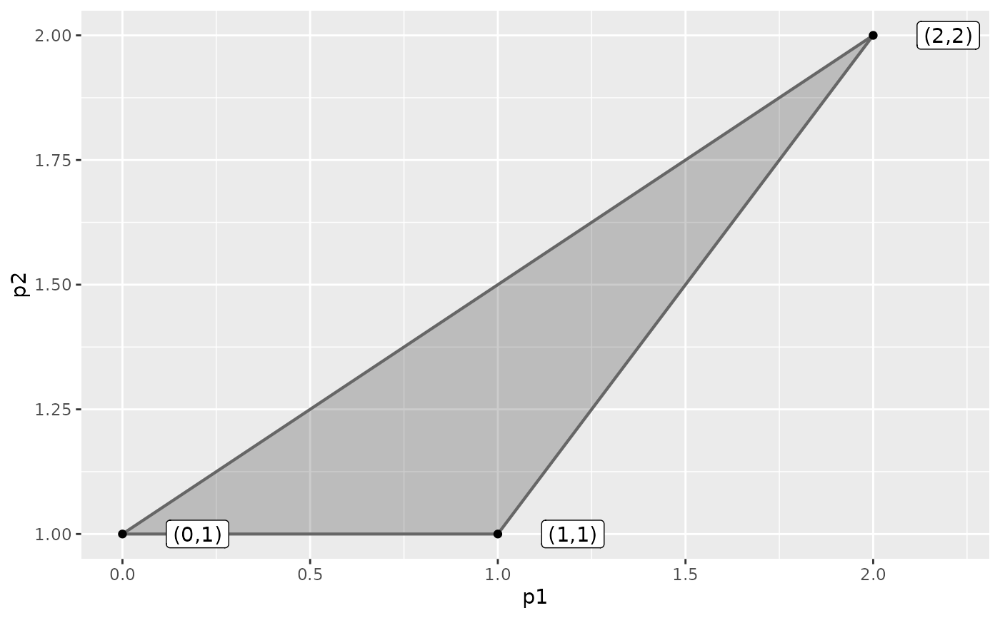

Plot the convex hull of a set of points in 2D.
Arguments
- pts
A matrix with a point in each row.
- drawPoints
Draw the points.
- drawLines
Draw lines of the facets.
- drawPolygons
Fill the hull.
- addText
Add text to the points. Currently
coord(coordinates),rownames(rownames) andbothsupported or a vector with text.- addRays
Add the ray defined by
direction.- direction
Ray direction. If i'th entry is positive, consider the i'th column of
ptsplus a value greater than on equal zero (minimize objective $i$). If negative, consider the i'th column ofptsminus a value greater than on equal zero (maximize objective $i$).- drawPlot
Draw the
ggplot. Set to FALSE if you want to combine hulls in a single plot.- drawBBoxHull
If
addRaysthen draw the hull areas hitting the bounding box also.- m
Minimum values of the bounding box.
- M
Maximum values of the bounding box.
- ...
Further arguments passed on the the
ggplotplotting functions. This must be done as lists. Currently the following arguments are supported:argsGeom_point: A list of arguments forggplot2::geom_point.argsGeom_path: A list of arguments forggplot2::geom_path.argsGeom_polygon: A list of arguments forggplot2::geom_polygon.argsGeom_label: A list of arguments forggplot2::geom_label.
Examples
library(ggplot2)
pts<-matrix(c(1,1), ncol = 2, byrow = TRUE)
plotHull2D(pts)
 pts1<-matrix(c(2,2, 3,3), ncol = 2, byrow = TRUE)
plotHull2D(pts1, drawPoints = TRUE)
plotHull2D(pts1, drawPoints = TRUE, addRays = TRUE, addText = "coord")
plotHull2D(pts1, drawPoints = TRUE, addRays = TRUE, addText = "coord", drawBBoxHull = TRUE)
pts1<-matrix(c(2,2, 3,3), ncol = 2, byrow = TRUE)
plotHull2D(pts1, drawPoints = TRUE)
plotHull2D(pts1, drawPoints = TRUE, addRays = TRUE, addText = "coord")
plotHull2D(pts1, drawPoints = TRUE, addRays = TRUE, addText = "coord", drawBBoxHull = TRUE)
 plotHull2D(pts1, drawPoints = TRUE, addRays = TRUE, direction = -1, addText = "coord")
plotHull2D(pts1, drawPoints = TRUE, addRays = TRUE, direction = -1, addText = "coord")
 pts2<-matrix(c(1,1, 2,2, 0,1), ncol = 2, byrow = TRUE)
plotHull2D(pts2, drawPoints = TRUE, addText = "coord")

plotHull2D(pts2, drawPoints = TRUE, addRays = TRUE, addText = "coord")
plotHull2D(pts2, drawPoints = TRUE, addRays = TRUE, direction = -1, addText = "coord")
## Combine hulls
ggplot() +
plotHull2D(pts2, drawPoints = TRUE, addText = "coord", drawPlot = FALSE) +
plotHull2D(pts1, drawPoints = TRUE, drawPlot = FALSE) +
gMOIPTheme() +
xlab(expression(x[1])) +
ylab(expression(x[2]))
pts2<-matrix(c(1,1, 2,2, 0,1), ncol = 2, byrow = TRUE)
plotHull2D(pts2, drawPoints = TRUE, addText = "coord")

plotHull2D(pts2, drawPoints = TRUE, addRays = TRUE, addText = "coord")
plotHull2D(pts2, drawPoints = TRUE, addRays = TRUE, direction = -1, addText = "coord")
## Combine hulls
ggplot() +
plotHull2D(pts2, drawPoints = TRUE, addText = "coord", drawPlot = FALSE) +
plotHull2D(pts1, drawPoints = TRUE, drawPlot = FALSE) +
gMOIPTheme() +
xlab(expression(x[1])) +
ylab(expression(x[2]))
 # Plotting an LP
A <- matrix(c(-3,2,2,4,9,10), ncol = 2, byrow = TRUE)
b <- c(3,27,90)
obj <- c(7.75, 10)
pts3 <- cornerPoints(A, b)
plotHull2D(pts3, drawPoints = TRUE, addText = "coord", argsGeom_polygon = list(fill = "red"))
# Plotting an LP
A <- matrix(c(-3,2,2,4,9,10), ncol = 2, byrow = TRUE)
b <- c(3,27,90)
obj <- c(7.75, 10)
pts3 <- cornerPoints(A, b)
plotHull2D(pts3, drawPoints = TRUE, addText = "coord", argsGeom_polygon = list(fill = "red"))